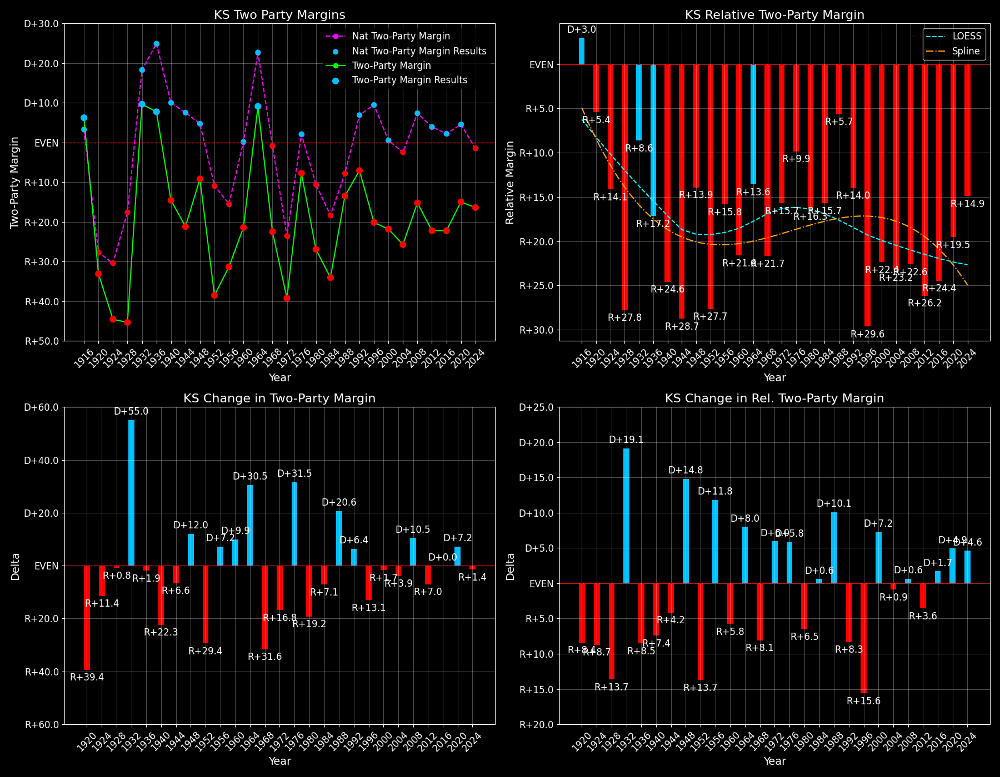

Kansas (KS) — Statewide

Margins · 3rd-Party share · Pres. deltas

Relative margins · Relative 3rd-Party · Rel. deltas
Kansas (KS) — Total Data
| Year | EVs | D | R | State Margin | Nat. Margin | Rel. Margin | Total votes |
|---|---|---|---|---|---|---|---|
| 1968 | 7 | 302,996(34.7%) | 478,674(54.8%) | R+20.1 | R+0.7 | R+19.4 | 872,783 |
| 1972 | 7 | 270,287(29.5%) | 619,812(67.7%) | R+38.2(Δ R+18.0) | R+23.1(Δ R+22.4) | R+15.0(Δ D+4.4) | 916,095 |
| 1976 | 7 | 430,421(44.9%) | 502,752(52.5%) | R+7.6(Δ D+30.6) | D+2.1(Δ D+25.2) | R+9.6(Δ D+5.4) | 957,845 |
| 1980 | 7 | 326,150(33.3%) | 566,812(57.9%) | R+24.6(Δ R+17.0) | R+9.7(Δ R+11.8) | R+14.8(Δ R+5.2) | 979,795 |
| 1984 | 7 | 333,149(32.6%) | 677,296(66.3%) | R+33.7(Δ R+9.1) | R+18.2(Δ R+8.5) | R+15.5(Δ R+0.6) | 1,021,991 |
| 1988 | 7 | 422,636(42.6%) | 554,049(55.8%) | R+13.2(Δ D+20.4) | R+7.7(Δ D+10.5) | R+5.5(Δ D+10.0) | 993,044 |
| 1992 | 6 | 390,434(33.7%) | 449,951(38.9%) | R+5.1(Δ D+8.1) | D+5.6(Δ D+13.3) | R+10.7(Δ R+5.2) | 1,157,236 |
| 1996 | 6 | 387,659(36.1%) | 583,245(54.3%) | R+18.2(Δ R+13.1) | D+8.5(Δ D+3.0) | R+26.7(Δ R+16.0) | 1,074,300 |
| 2000 | 6 | 399,276(37.2%) | 622,332(58.0%) | R+20.8(Δ R+2.6) | D+0.5(Δ R+8.0) | R+21.3(Δ D+5.4) | 1,072,218 |
| 2004 | 6 | 434,993(36.6%) | 736,456(62.0%) | R+25.4(Δ R+4.6) | R+2.5(Δ R+3.0) | R+22.9(Δ R+1.6) | 1,187,756 |
| 2008 | 6 | 514,765(41.7%) | 699,655(56.6%) | R+15.0(Δ D+10.4) | D+7.3(Δ D+9.7) | R+22.2(Δ D+0.7) | 1,235,872 |
| 2012 | 6 | 440,726(38.0%) | 692,634(59.7%) | R+21.7(Δ R+6.8) | D+3.9(Δ R+3.4) | R+25.6(Δ R+3.3) | 1,159,971 |
| 2016 | 6 | 427,005(36.1%) | 671,018(56.7%) | R+20.6(Δ D+1.1) | D+2.1(Δ R+1.8) | R+22.7(Δ D+2.9) | 1,184,402 |
| 2020 | 6 | 570,323(41.5%) | 771,406(56.1%) | R+14.6(Δ D+6.0) | D+4.5(Δ D+2.4) | R+19.1(Δ D+3.6) | 1,373,986 |
| 2024 | 6 | 544,853(41.0%) | 758,802(57.2%) | R+16.1(Δ R+1.5) | R+1.5(Δ R+5.9) | R+14.6(Δ D+4.4) | 1,327,591 |
Column explanations
- Δ
- Change (delta) in the value from the previous election year.
- Year
- Election year.
- EVs
- Number of electoral votes allocated to this state or unit.
- D
- Number of votes for the Democratic candidate (raw count(pct%)).
- R
- Number of votes for the Republican candidate (raw count(pct%)).
- State Margin
- Margin between the two major-party candidates, including third-party votes ((D - R)/total).
- Nat. Margin
- The national presidential margin for that year, including third-party votes ((D_total - R_total)/total_votes).
- Rel. Margin
- The presidential margin relative to the national presidential margin (Margin - Nat. Margin).
- Total votes
- Total voter turnout or ballots cast (when provided).
Kansas (KS) — Third-Party Data
| Year | D | R | Other votes | State 3rd-Party Share | 3rd-Party Nat. Share | 3rd-Party Rel. Share |
|---|---|---|---|---|---|---|
| 1968 | 302,996(34.7%) | 478,674(54.8%) | 91,113(10.4%) | 10.44% | 13.86% | -3.42% |
| 1972 | 270,287(29.5%) | 619,812(67.7%) | 25,996(2.8%) | 2.84% | 1.80% | 1.03% |
| 1976 | 430,421(44.9%) | 502,752(52.5%) | 24,672(2.6%) | 2.58% | 1.90% | 0.67% |
| 1980 | 326,150(33.3%) | 566,812(57.9%) | 86,833(8.9%) | 8.86% | 8.24% | 0.62% |
| 1984 | 333,149(32.6%) | 677,296(66.3%) | 11,546(1.1%) | 1.13% | 0.67% | 0.46% |
| 1988 | 422,636(42.6%) | 554,049(55.8%) | 16,359(1.6%) | 1.65% | 0.98% | 0.67% |
| 1992 | 390,434(33.7%) | 449,951(38.9%) | 316,851(27.4%) | 27.38% | 19.55% | 7.83% |
| 1996 | 387,659(36.1%) | 583,245(54.3%) | 103,396(9.6%) | 9.62% | 10.05% | -0.43% |
| 2000 | 399,276(37.2%) | 622,332(58.0%) | 50,610(4.7%) | 4.72% | 3.75% | 0.97% |
| 2004 | 434,993(36.6%) | 736,456(62.0%) | 16,307(1.4%) | 1.37% | 1.00% | 0.37% |
| 2008 | 514,765(41.7%) | 699,655(56.6%) | 21,452(1.7%) | 1.74% | 1.42% | 0.31% |
| 2012 | 440,726(38.0%) | 692,634(59.7%) | 26,611(2.3%) | 2.29% | 1.73% | 0.56% |
| 2016 | 427,005(36.1%) | 671,018(56.7%) | 86,379(7.3%) | 7.29% | 5.73% | 1.56% |
| 2020 | 570,323(41.5%) | 771,406(56.1%) | 32,257(2.3%) | 2.35% | 1.84% | 0.50% |
| 2024 | 544,853(41.0%) | 758,802(57.2%) | 23,936(1.8%) | 1.80% | 1.88% | -0.08% |
Column explanations
- Year
- Election year.
- D
- Number of votes for the Democratic candidate (raw count(pct%)).
- R
- Number of votes for the Republican candidate (raw count(pct%)).
- Other votes
- Number of votes for third-party (other) candidates (raw count(pct%)).
- State 3rd-Party Share
- Share of the vote received by third-party (other) candidates.
- 3rd-Party Nat. Share
- The national third-party share for that year (3rd-Party votes / total votes).
- 3rd-Party Rel. Share
- Third-party share relative to the national third-party share (3rd-Party share - Nat. 3rd-Party share).

Two-party margins · relative · deltas
Kansas (KS) — Two-Party Data
| Year | EVs | D | R | 2-Party Margin | 2-Party Nat. Margin | 2-Party Rel. Margin |
|---|---|---|---|---|---|---|
| 1968 | 7 | 302,996(38.8%) | 478,674(61.2%) | R+22.5 | R+0.8 | R+21.7 |
| 1972 | 7 | 270,287(30.4%) | 619,812(69.6%) | R+39.3(Δ R+16.8) | R+23.6(Δ R+22.8) | R+15.7(Δ D+6.0) |
| 1976 | 7 | 430,421(46.1%) | 502,752(53.9%) | R+7.8(Δ D+31.5) | D+2.1(Δ D+25.7) | R+9.9(Δ D+5.8) |
| 1980 | 7 | 326,150(36.5%) | 566,812(63.5%) | R+27.0(Δ R+19.2) | R+10.6(Δ R+12.7) | R+16.3(Δ R+6.5) |
| 1984 | 7 | 333,149(33.0%) | 677,296(67.0%) | R+34.1(Δ R+7.1) | R+18.3(Δ R+7.7) | R+15.7(Δ D+0.6) |
| 1988 | 7 | 422,636(43.3%) | 554,049(56.7%) | R+13.5(Δ D+20.6) | R+7.8(Δ D+10.5) | R+5.7(Δ D+10.1) |
| 1992 | 6 | 390,434(46.5%) | 449,951(53.5%) | R+7.1(Δ D+6.4) | D+6.9(Δ D+14.7) | R+14.0(Δ R+8.3) |
| 1996 | 6 | 387,659(39.9%) | 583,245(60.1%) | R+20.1(Δ R+13.1) | D+9.5(Δ D+2.6) | R+29.6(Δ R+15.6) |
| 2000 | 6 | 399,276(39.1%) | 622,332(60.9%) | R+21.8(Δ R+1.7) | D+0.5(Δ R+8.9) | R+22.4(Δ D+7.2) |
| 2004 | 6 | 434,993(37.1%) | 736,456(62.9%) | R+25.7(Δ R+3.9) | R+2.5(Δ R+3.0) | R+23.2(Δ R+0.9) |
| 2008 | 6 | 514,765(42.4%) | 699,655(57.6%) | R+15.2(Δ D+10.5) | D+7.4(Δ D+9.9) | R+22.6(Δ D+0.6) |
| 2012 | 6 | 440,726(38.9%) | 692,634(61.1%) | R+22.2(Δ R+7.0) | D+3.9(Δ R+3.4) | R+26.2(Δ R+3.6) |
| 2016 | 6 | 427,005(38.9%) | 671,018(61.1%) | R+22.2(Δ D+0.0) | D+2.2(Δ R+1.7) | R+24.4(Δ D+1.7) |
| 2020 | 6 | 570,323(42.5%) | 771,406(57.5%) | R+15.0(Δ D+7.2) | D+4.5(Δ D+2.3) | R+19.5(Δ D+4.9) |
| 2024 | 6 | 544,853(41.8%) | 758,802(58.2%) | R+16.4(Δ R+1.4) | R+1.5(Δ R+6.0) | R+14.9(Δ D+4.6) |
Column explanations
- Δ
- Change (delta) in the value from the previous election year.
- Year
- Election year.
- EVs
- Number of electoral votes allocated to this state or unit.
- D
- Number of votes for the Democratic candidate (raw count(pct%)).
- R
- Number of votes for the Republican candidate (raw count(pct%)).
- 2-Party Margin
- Margin between the two major-party candidates, ignoring third-party votes ((D - R)/(D + R)).
- 2-Party Nat. Margin
- The national presidential margin for that year, including third-party votes ((D_total - R_total)/total_votes).
- 2-Party Rel. Margin
- The presidential margin relative to the national presidential margin (Margin - Nat. Margin).